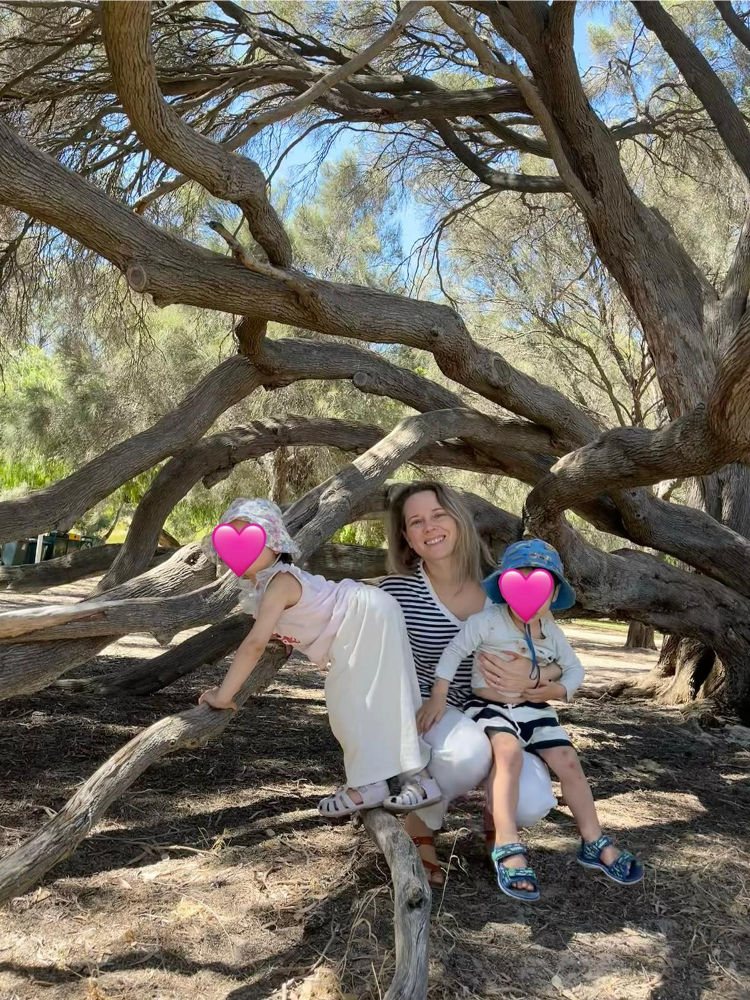

I decided to study geology because I really enjoyed it in high school. Once at university, I had the opportunity to do my first internship on a gold exploration project, doing soil sampling in French Guiana, in the middle of the Amazonian Forest. I absolutely loved this experience. I knew I wanted to keep doing fieldwork. I loved the adventure, the travel, and working in remote places. After graduation, I worked with the geological exploration bureau of Québec in Canada, where I spent several entire summers doing large-scale geological mapping in the far North. We camped out for about three months at a time. It was one of the best experiences I've had, and I have really fond memories of it. I then did a Master’s by research in Montreal, studying a rare earth deposit. After finishing, I decided to move to Australia. I worked for a few junior exploration companies, doing campaign-style work across the Northern Territory and Western Australia. Again, I really enjoyed the adventure of working in remote parts of the country. I think the most exciting part of fieldwork in Australia was the creek crossings, sometimes through potentially crocodile-infested rivers. But at that point, I was starting to think about having kids, and I couldn’t see a path forward in those roles. There wasn’t much in terms of career progression in junior companies, and the lifestyle wasn’t exactly compatible with family life. I was also starting to find exploration work less fulfilling. I wanted to understand more about ore-forming processes and wasn’t as interested in the exploration side anymore. I was mainly enjoying the fieldwork. So I started a PhD in Perth, Australia studying gold deposit formation. After finishing, I moved into a postdoc position, also in Perth. It was mostly office-based and flexible, with only occasional field trips to mining sites. That’s when I had my two kids, 14 months apart. Having children while working in academia came with its challenges, but I’ve been lucky to continue doing work I love while staying flexible enough to care for my little ones. I was able to take maternity leave, work part-time when I needed to, and take carer's leave when they were sick (which happened a lot during their first year in childcare). If you don’t have family support and your partner’s job isn’t flexible (like it is the case for me), continuing to work and stay productive can actually be very stressful in those early years. My kids are still young and often unwell, so it’s hard to stay on top of everything in my field. I do worry about staying competitive enough to stick around in academia, but I really enjoy going to work and that’s the most important thing!"